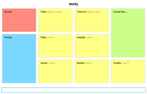
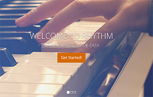

Sadhika Billa
Sadhika Billa
DREAMER . DESIGNER . DEVELOPER
About

Design and Develop
I am both a developer who enjoys solving problems with code as well as a UI/UX designer who loves creating beautiful and intutitive user experiences. As a computer science student, I've been trained to write good code and rack my brains to come up with innovate solutions. Being naturally creative and artsitic, I've always loved front end development and beautiful, simple design that's easy to work with.
For me, the journey is the reward. I love learning and enjoy discovering new things about design and tech everyday!

Learning from the Best
As a scholar under the Infocomm Development Authority of Singapore (iDA), I have had the opportunity to learn from and engage with professionals from various industries. As a part of the programme, I have attended multiple seminars and completed a variety of courses as as well. Among the most ineresting of these was a certification course on Design Thinking and Cognitive Skills, which helped me get a better understanding of the design thinking methodology and how it is used to solve complex problems.
Giving back to the community
I adore animals and have been a volunteer at the Society for the Prevention of Cruelty to Animals (SPCA) for two years now. I enjoy community engagemnet (CE) and have not only partcipated in CE events, but have also organised a couple of them in university. Among these, have been collaboratons with the SPCA and SOSD (Dog Shelter Volunteer and Donation), where students get to meet shelter dogs that have been rehablitated to promote awareness regarding responsible ownership.
What goes around comes around! Always be ready to grab an opPAWtunity to do some good!
Education
National University Of Singapore (NUS)
2014 - Present
Computer Science
I am a full time, second year undergrad student majoring in Computer Science in NUS. Through the course of my university, I have taken modules in programming (Data Structures and Algorithms I/II/III) design (Interaction Design) and software engineering to horne and develope my skills.
Serangoon Junior College (SRJC)
2012-2014
GCSE A Levels
I completed my 'A' levels from Serangoon Junior College (SRJC) and graduated with merit among the top 5% of my cohort (yay to that!). My subject combination in JC (Junior College) was P/C/M/E (Physics, Chemistry, Maths and Economics). I also really loved Physical Education (especially track & field)!
Work Experience
 Accenture
Accenture - To work with Accenture's Digital Team.
- Tasked to improve the UI/UX for their applications.
- To work with 3 other interns on iOS app development using Swift.
- Worked with a team of 5, in charge of user experience.
- In charge of designing and creating the company logos for startups, to help them improve company branding.
- Worked with Adobe illustrator to create the logos, which are being used as the official logos of the startups.
- Worked with a team of 12, as a part of the Intellect Digital Branch Team.
- Designed and built the interface for Canvas, a proprietary software, which makes designing banking applications easy.
- Worked primarly with Java and JavaFX to create the interface of a banking application. The interface gained significant positive feedback.
- Elected into the committee to represent the interest of 120 residents in the neighbourhood.
- As head of Publicity, worked with the committee to organise and promote events at the College.
- Inceased participation in College events such as Halloween and Mid-Autumn festival, by threefold, through effective social media publicity.
- Attend to queries and advised potential pet owners regarding their pets.
- Work with the potential owner and the dog to help them get comfortabe around one another.
- Organised events to promote awareness among pet owners and volunters regarding responsible ownership.
Skills
Design & Web Development
I've created a number of logos for small companies and startups using illustrator, stetch and photoshop. As the head of publicity in CAPT (NUS), I have also designed posters to promote events happening in the college. I've designed designed and built websites for school projects and as pet projects.
Through my internships and modules, I've picked up principles of good UI/UX. I am currently designing a Dog Walking application.
Software Engineering
Through my course and the projecs that I have done, I've gained an understanding of the SDLC and picked up good Software engineering practices. I've learnt the importance of effective revision controll, and have had the chance to experiment with various API's.
Since I love design, I tend to be in charge of develping the front end for most school projects and as a result have experimented with libraries like javaFX and Pixi.js.
Portfolio

Notify
Croissant pudding gingerbread gummi bears marshmallow halvah puri khalo.

Rhythm
Croissant pudding gingerbread gummi bears marshmallow halvah puri khalo.

Mobile Application
Croissant pudding gingerbread gummi bears marshmallow halvah puri khalo.

Mobile Application
Croissant pudding gingerbread gummi bears marshmallow halvah puri khalo.

Mobile Application
Croissant pudding gingerbread gummi bears marshmallow halvah puri khalo.